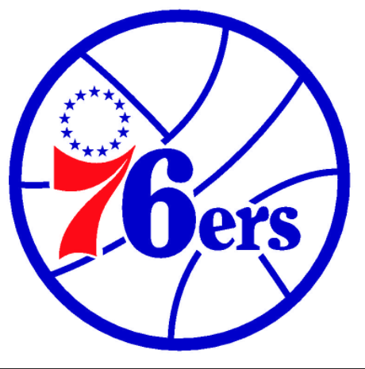
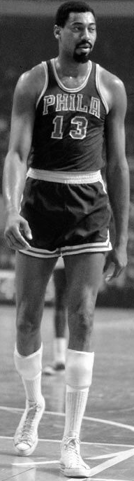
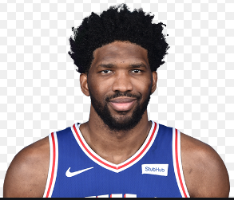

76ers
The Philadelphia 76ers (colloquially known as the Sixers) are an American professional basketball team based in the Philadelphia metropolitan area. The 76ers compete in the National Basketball Association (NBA) as a member of the league's Eastern Conference Atlantic Division and play at the Wells Fargo Center. Founded in 1946 and originally known as the Syracuse Nationals, they are one of the oldest franchises in the NBA and one of only eight (out of 23) to survive the league's first decade.
The 76ers have had a prominent history, with many Hall of Fame players having played for the organization, including Dolph Schayes, Hal Greer, Wilt Chamberlain, Billy Cunningham, Julius Erving, Moses Malone, Charles Barkley, and Allen Iverson. They have won three NBA championships, with their first coming as the Syracuse Nationals in 1955. The second title came in 1967, a team which was led by Chamberlain. The third title came in 1983, won by a team led by Erving and Malone. The 76ers have only been back to the NBA Finals once since then: in 2001, where they were led by Iverson and lost to the Los Angeles Lakers in five games.
Wilton Norman Chamberlain was an American professional basketball player who played as a center and is considered one of the greatest players in history. He played for the Philadelphia/San Francisco Warriors, the Philadelphia 76ers, and the Los Angeles Lakers of the National Basketball Association (NBA). He played for the University of Kansas and also for the Harlem Globetrotters before playing in the NBA. Chamberlain stood 7 ft 1 in (2.16 m) tall, and weighed 250 pounds (110 kg) as a rookie before bulking up to 275 and eventually to over 300 pounds (140 kg) with the Lakers. Chamberlain holds numerous NBA records in scoring, rebounding, and durability categories. He is the only player to score 100 points in a single NBA game or average more than 40 and 50 points in a season. He won seven scoring, eleven rebounding, and nine field goal percentage titles and led the league in assists once. Chamberlain is the only player in NBA history to average at least 30 points and 20 rebounds per game in a season, which he accomplished seven times. He is also the only player to average at least 30 points and 20 rebounds per game over the entire course of his NBA career. Although he suffered a long string of NBA Finals losses during his career, Chamberlain had a successful career, winning two NBA championships, earning four regular-season Most Valuable Player awards, the Rookie of the Year award, one NBA Finals MVP award, and was selected to 13 All-Star Games and ten All-NBA First and Second teams. He was subsequently enshrined in the Naismith Memorial Basketball Hall of Fame in 1978, elected into the NBA's 35th Anniversary Team of 1980, and in 1996 he was chosen as one of the 50 Greatest Players in NBA History. Chamberlain was known by several nicknames during his basketball playing career. He hated the ones that called attention to his height, such as "Goliath" and "Wilt the Stilt". A Philadelphia sportswriter coined the nicknames during Chamberlain's high school days. He preferred "The Big Dipper", which was inspired by his friends who saw him dip his head as he walked through doorways. After his professional basketball career ended, Chamberlain played volleyball in the short-lived International Volleyball Association, was president of that organization, and is enshrined in the IVA Hall of Fame for his contributions. He was a successful businessman, authored several books, and appeared in the movie Conan the Destroyer.
Joel Hans Embiid is a Cameroonian professional basketball player for the Philadelphia 76ers of the National Basketball Association (NBA). After one year of college basketball with the Kansas Jayhawks, he was drafted with the third overall pick in the 2014 NBA draft by the 76ers. Multiple foot and knee injuries delayed his debut for two seasons until 2016–17, when he was named to the NBA All-Rookie First Team despite playing only 31 games. Embiid has received three All-Star selections. He has nicknamed himself "the Process" in response to a refrain from 76ers fans during the Sam Hinkie era to "trust the process".